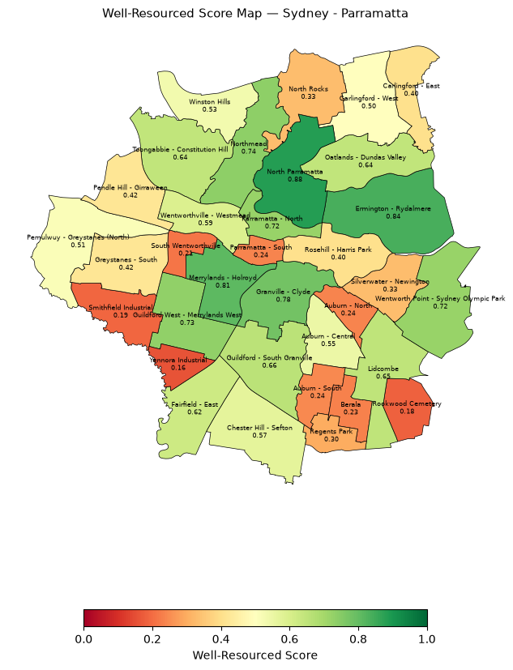
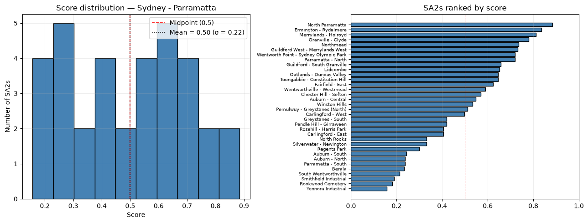

Two linked analyses: the demographic forces reshaping New South Wales between 2011 and 2024, and a points-of-interest "resource score" computed for every one of the 34 SA2 regions inside the Sydney–Parramatta zone — built end to end with the Python data-science stack and PostGIS.
01 — NSW demographicsMigration now drives almost all of the state's growth
Cleaning the ABS NSW Region Summary and deriving five statistics reveals a clear story. As natural increase (births minus deaths) fades, net migration drove roughly 82% of NSW population growth by 2023 — overseas arrivals rebounded sharply post-COVID even as internal migration stayed negative.
The Aboriginal and Torres Strait Islander population grew +61% between 2011 and 2021 (census count 172,620 → 278,043) — roughly 3.3× the overall NSW rate — and the composition of the overseas-born population is shifting toward Southern and Central Asia.
02 — MethodFrom a live POI API to a scored map
For the resource score, a nearbyPOI() function queried the NSW Points of Interest API across all 34 SA2 polygons (ABS boundaries via GeoPandas), filtered points to inside-polygon with Shapely, and ingested 2,086 POIs into a PostGIS table. Each region's score is a sigmoid of its standardised POI count:
z = (poi_count − μ) / σ → Score = 1 / (1 + e−z)
03 — FindingsScores span 0.16 to 0.89

| Rank | SA2 region | POIs | Score |
|---|---|---|---|
| 1 | North Parramatta | 132 | 0.88 |
| 2 | Ermington – Rydalmere | 118 | 0.84 |
| 3 | Merrylands – Holroyd | 112 | 0.81 |
| … | … | … | … |
| 34 | Yennora Industrial | 3 | 0.16 |

What a raw POI count can and can't measure
The lowest-scoring regions are non-residential land — the Yennora and Smithfield industrial estates and Rookwood Cemetery — which exposes the model's main limitation: a raw POI count conflates "few amenities" with "not a residential area". A production version would normalise by residential population or land use, and weight POI types by relevance rather than counting them equally.